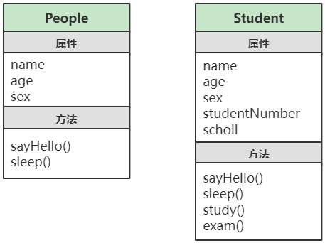
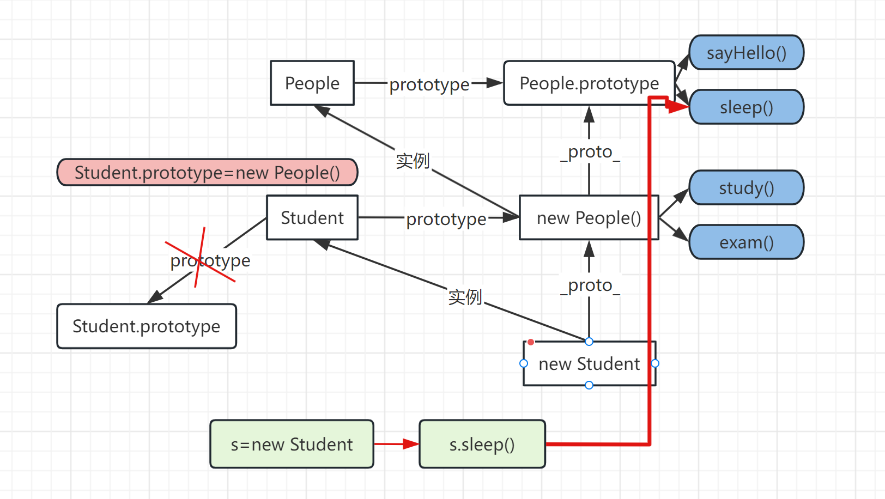
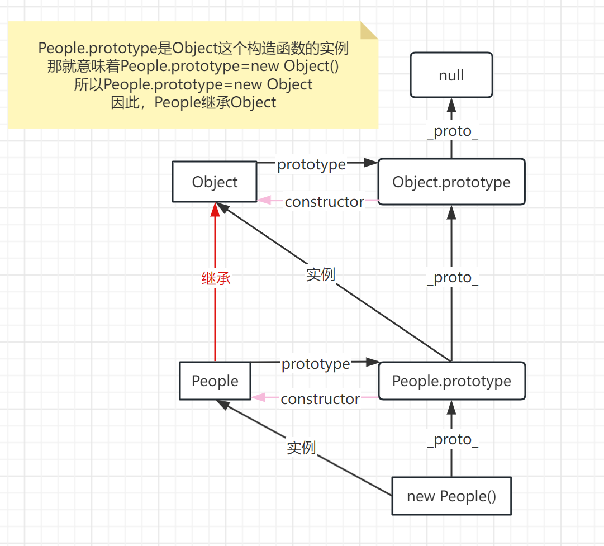
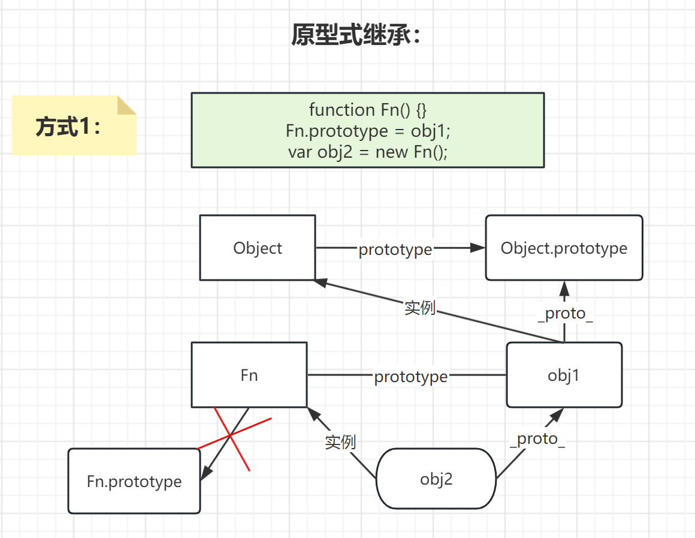
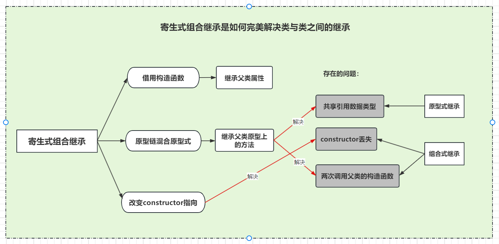
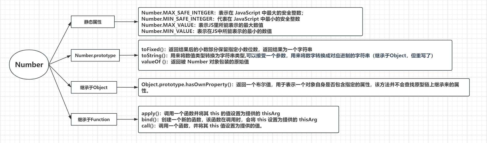
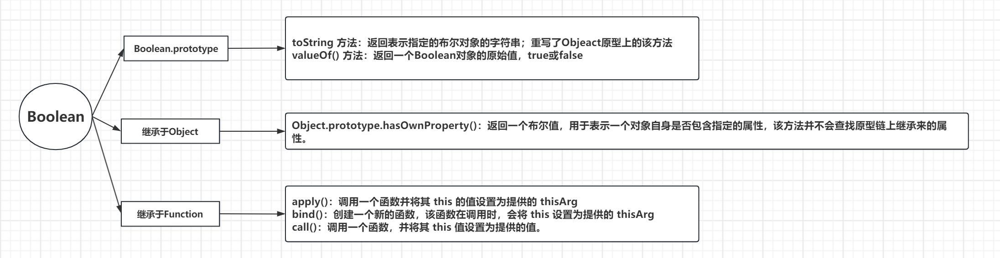
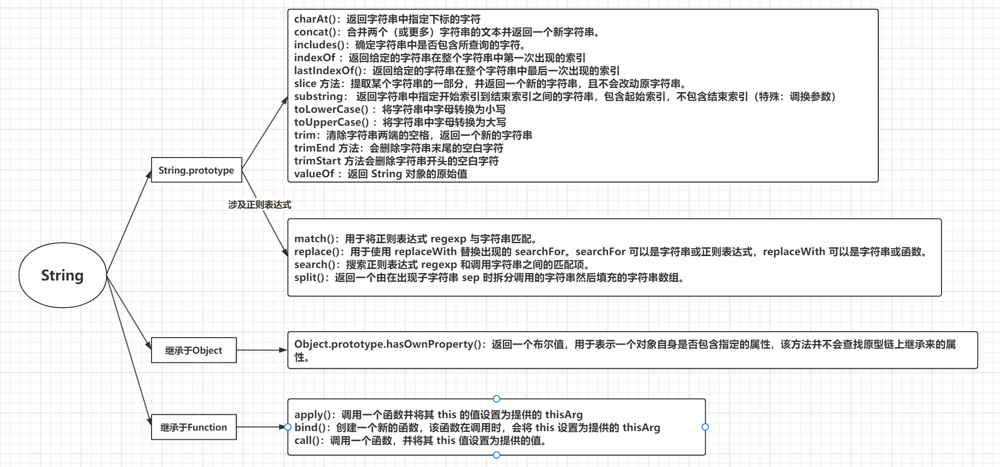

JavaScript 继承的 6 种方式、应用场景，内置构造函数
一、什么是继承呢 ？
- 首先继承是一种关系，类（Class）与类之间的关系
- JS 中没有类,但是可以通过构造函数模拟类，然后通过原型来实现继承。
- 继承是为了实现数据共享，同时对于实现代码的复用非常有用
我们先来看下面两个类

解说
People类拥有的属性和方法Student类都有，同时Student类还扩展了一些自已独有的属性和方法- 我们可以按上图结构定义
People类，然后再定义一个Student类，在Student类上只需要定义People类上没有的属性和方法。- 然后用
Student类继承People类，这样Student类就可以直接拥有People类的所有属性和方法了
Student类继承People类，在这个继承关系中
People类称为“父类”（或 “超类”、“基类”）Student类称为“子类”（或“派生类”）Student子类可以访问People父类的所有属性和方法Student“是一种”People，两个继承类之间是“is a kind of”关系- 继承描述了两个类之间的
“ is a kind of "关系，也就是两个类之间存在"is a kind of "关系，就可以实现继承。
- 接下来，我们来学习下，如何实现类与类之间的继承关系。
JavaScript 实现继承有以下 6 种方式
- 原型链实现继承
- 借用构造函数（经典继承）
- 组合继承
- 原型式继承
- 寄生式继承
- 寄生式组合继承
实现继承的关键在于：子类必须拥有父类的全部公有（属性和方法），同时子类还应该能定义自己特有的属性和方法
二、通过原型链实现继承
接下来，我们来学习下，如何利用原型链实现
Student类 继承People类
原型链实现继承的本质
让子类构造函数的
prototype，指向父类的一个实例// 子类 Student 父类 People Student.prototype = new People(); // 以上原型链方式实现继承，Student 的实例就可以访问 Popele类原型上的所有方法和属性
- 通过前面的学习我们知道，每个构造函数都有一个
prototype属性，这个属性指向一个对象。- 构造函数构造出来的实例对象，可以访问构造函数
prototype属性上所有方法和属性。- 如果
子类构造函数.prototype = 父类的实例，那子类的实例就可以通过原型链查找，访问到父类构造函数原型prototype上面的所有属性和方法。
- Student 类继承 People 类关系图
原型链实现继承本质上是扩展了原型的搜索机制。
- 实例在访问某个属性时，会在自己身上找，找不到，就会去原型上找
- 原型上找不到，就会去继承的实例的原型上去找，一层层向上找，找到就不找
- 找不到就会一直找到原型链的终点（Object 原型的原型，为 null）
- Student 类 与 People 类 通过原型链实现继承，代码如下
// 子类 学生类// 父类 人类 function People(name, age, sex) { this.name = name; this.age = age; this.sex = sex; } People.prototype.sayHello = function () { console.log( "我是" + this.name + "今年" + this.age + "岁，我是" + this.sex + "生" ); }; People.prototype.sleep = function () { console.log(this.name + "开始睡觉了zzzzz"); };
function Student(name, age, sex, scholl, sid) {
this.name = name;
this.age = age;
this.sex = sex;
this.scholl = scholl;
this.sid = sid;
}
// 实现继承 一定要先实现继承，再添加新的方法和属性
Student.prototype = new People();
Student.prototype.study = function () {
console.log(this.name + “正在学习！”);
};
Student.prototype.exam = function () {
console.log(this.name + “正在考试，加油！！”);
};
// 创建父类 实例
var laoliu = new People(“老刘”, 38, “男”);
laoliu.sayHello();//我是老刘今年38岁，我是男生
// 创建子类实例
var cuihua = new Student(“翠花”, 18, “女”, “雅礼中学”, 20800);
cuihua.sayHello();//我是翠花今年18岁，我是女生
cuihua.sleep();//翠花开始睡觉了zzzzz
cuihua.study();//翠花正在学习！
cuihua.exam();//翠花正在考试，加油！！
- 一定要先实现继承，再添加新的方法和属性
Student.prototype = new People();改变了子类的prototype- 通过
Student.prototype添加的方法，实际上是加在了new People()身上- 如果先添加方法，再改变，就找不到该方法了
- 父类和子类身上都有
name、sex、age属性- 写
Student.prototype = new People();的时候，不用输入参数，输了也会被新创建的子类替代
注意事项 1 - 重写父类方法
- 子类有时候需要覆盖父类的方法，或者增加父类没有的方法。这些方法必须在原型赋值之后再添加到原型上去。
- 子类覆盖父类上已有的方法，我们称为重写 （override）父类方法
// 以下代码必需写在 Student.prototype = new People(); 之后 // 也可以重写（override）父类的 sayHello方法 Student.prototype.sayHello = function () { console.log("大家好，我是" + this.scholl + "学校的学生,我叫" + this.name); };注意事项 2 - 子类的
constructor指向问题复习知识点：
- 任何函数都有一个
prototype属性，prototype属性值是一个对象，这个对象有一个constructor属性，指向这个函数本身 - 构造函数的
prototype属性是它的实例的原型,在构造函数的实例中有一个隐含的属性__proto__，指向该构造函数的原型prototype - 构造函数构造的实例可以直接访问
prototype对象身上的属性和方法；因此实例.constructor === 构造函数那就说明这个实例是这个构造函数的实例实例会沿着原型链
__proto__一层层查找constructor，只有原型prototype才有constructor属性
- 任何函数都有一个
- 因为
Student.prototype=new People()使Student类继承People类Student.prototype=new People(); new People().constructor===People; Student.prototype.consructor===People; cuihua.__proto__===new People(); cuihua.__proto__.constuctor===People; 因为构造函数构造的实例可以直接访问其构造函数的`prototype`对象身上的属性和方法 所以：cuihua.constructor===People
- 因此
Student.prototype中的constructor属性被重写为指向People- 即
Student的所有实例访问到的constructor都指向People- 所以造成了子类原型中的
constructor被丢失，当访问子类原型中的constructor时，其本质是通过原型链查找，最终查找到的是父类的构造函数
注意事项 3 - instanceof
instanceof操作符确认实例与构造函数的关系- 如果实例的原型链中出现过对应的构造函数的原型，则实例为对应构造函数的实例
cuihua instanceof Student; // true cuihua instanceof People; // true cuihua instanceof Object; // true注意事项 4
从继承的角度来看原型链
- 任意函数的默认
prototype原型都是一个Object的实例 - 这就意味着函数的默认原型中有一个
__proto__属性指向Object.prototype声明一个构造函数
People
function People() {} People.prototype.__proto__ === Object.prototype; // true new People().__proto__.__proto__ === Object.prototype; // true- 任意函数的默认
- 根据上图可知，任何函数其实都继承于
Object- 这就是为什么自定义类型能继承（访问）
Object原型上的toString()、valueOf()等方法的原型
- 原型链实现继承的不足之一
- 实例拥有其构造函数的所有属性和方法(可访问可修改)，并且能够调用其原型里的所有方法
- 如果原型中某个属性的值是引用类型值时,这个值会被所有实例共享。当实例修改这个属性值时，其它实例身上对应的这个属性值也被改变了
- 这也是为什么属性通常会在构造函数中定义，而不会定义在原型上的原因
- 原型链实现继承，子类的原型实际上变成父类的实例，则就意味父类实例身上的属性变成了子类原型属性；
- 所有子类的实例都能访问这个属性或修改属性值,一旦子类的实例修改引用类型的属性值，那么其它实例身上对应的这个属性值也被改变了
引用数据类型赋值时赋的是地址，基本数据类型赋的是值，不会被影响
// 超类 （父类） function SuperType() { this.colors = ["red", "blue", "yellow"]; this.a = 2; } // 子类 function subType() {}
subType.prototype = new SuperType();
var sub1 = new subType();
var sub2 = new subType();
sub1.a = 4; // 修改值，相当于重写属性（遮蔽效应）
console.log(sub1.a); // 4
console.log(sub2.a); // 2
sub1.colors.push(“green”); // 修改数组中值
console.log(sub1.colors); // [‘red’, ‘blue’, ‘yellow’, ‘green’]
console.log(sub2.colors); // [‘red’, ‘blue’, ‘yellow’, ‘green’]
<img src="通过原型链继承的缺点1.png">
- 原型链实现继承的不足之二
子类在实例化时，不能给父类的构造函数传参。 也就意味着，子类不能应用父类已有的属性，而需要自己重写一份
// 父类 人类 function People(name, age, sex) { this.name = name; this.age = age; this.sex = sex; }
// 子类 学生类
function Student(name, age, sex, scholl, sid) {
this.name = name;
this.age = age;
this.sex = sex;
}
// 实现继承 一定要先实现继承，再添加新的方法和属性
Student.prototype = new People();
// 创建子类实例
var cuihua = new Student(“翠花”, 18, “女”, “雅礼中学”, 20800);//
借用构造函数（经典继承）
- 为了解决子类原型中包含引用类型值所带来问题和在子类构造函数中不能给父类构造函数传参的问题
- 开发人员通常使用一种叫做 “借用构造函数” 的技术，也被称为 “伪造对象” 或 “经典继承”
借用构造函数的基本思路
- 在子类构造函数内部调用父类的构造函数
- 但要注意使用
call或apply方法将新创建的对象作为父类构造函数的上下文对象 - 子类可以继承父类构造函数中的所有属性并传参
function People(name, sex, age) { this.name = name; this.sex = sex; this.age = age; this.arr = [1, 2, 3]; }function Student(name, sex, age, school, sid) {
// 借用构造函数
People.call(this, name, sex, age);
this.school = school;
this.sid = sid;
}var cuihua = new Student(“翠花”, “女”, 18, “雅礼中学”, 20230106);
cuihua.arr.push(“abc”); //子类的实例拥有了父类身上所有方法
console.log(cuihua.name); //翠花
console.log(cuihua.arr); // [1, 2, 3, ‘abc’]借用构造函数实现继承的不足之处
- 如果采用借用构造函数的方式实现继承，是没有办法把父类原型上的方法继承过来，只能继承父类构造函数中的属性
- 如果要把父类上的方法继承过来，那父类的方法就必需定义在构造函数内部，之显然是不合理的
四、组合继承
- 将原型链实现继承和借用构造函数实现继承的技术组合到一起，这样就可以将两者的优点集中起来
- 这种继承方式，叫做 “组合继承” ，也叫作”伪经典继承”
组合继承的基本思路
- 使用原型链继承来实现继承父类原型上的属性和方法
- 弥补了借用构造函数不能继承父类原型上方法的缺陷
- 借用构造函数来实现继承父类实例的所有属性(可传参)
- 弥补了原型链继承，父类原型上值为引用类型的属性，不能相互独立的缺陷
- 从父类继承的属性，是通过改变this指向给父类得到的；区别于原型链继承时，所有属性和方法都是放在子类的原型里的方式；因此，子类的这些属性相互独立，即使是引用数据类型也不是同一地址；
这样就可以把父类的方法定义在子类的原型上，实现重用。同时又可以让每个实例都有自己的属性。
// 父类 人类 function People(name, age, sex) { this.name = name; this.age = age; this.sex = sex; this.a = [1, 2, 3]; } People.prototype.sayHello = function () { console.log( "我是" + this.name + "今年" + this.age + "岁，我是" + this.sex + "生" ); };// 子类 学生类
function Student(name, age, sex, scholl, sid) {
// 借用构造函数 继承父类构造函数中的属性
People.call(this, name, age, sex);
this.scholl = scholl;
this.sid = sid;
}// 借用原型链 继承来实现继承父类原型上的属性和方法
Student.prototype = new People();Student.prototype.study = function () {
console.log(this.name + “正在学习！”);
};// 创建子类实例
var cuihua = new Student(“翠花”, 18, “女”, “雅礼中学”, 20800); //传参
var xiaoming = new Student(“小明”, 16, “男”, “雅礼中学”, 20990); //传参
cuihua.sayHello();
cuihua.study();
console.log(cuihua.a === xiaoming.a); //false
console.log(cuihua.a); //[1, 2, 3]
cuihua.a.push(12);
console.log(cuihua.a); //[1, 2, 3,12]
console.log(xiaoming.a); //[1, 2, 3]不会受到影响- 使用原型链继承来实现继承父类原型上的属性和方法
组合继承的不足之处
组合继承最大的问题就是无论什么情况下，都会调用两次父（超）类的构造函数
- 一次是在创建子类原型的时候，如
Student.prototype = new People(); // 调用父类构造函数- 另一次是在子类构造函数的内部，如
People.call(this, name, age, sex); // 调用父类的构造函数子类原型中的
constructor被丢失，当访问子类原型中的constructor时，其本质是通过原型链查找，最终查找到的是父类的构造函数Student.prototype.constructor === People; // true关于组合继承的不足之处如何解决，我们在后面会讲到
五、原型式继承
重点强调：原型式继承是一种不涉及严格意义上构造函数的继承方法
- 原型式继承适用场景
- 如果你有一个对象，想在它的基础上再创建一个新对象
- 现有对象
obj1，现在希望再创建一个obj2对象，obj2需要继承obj1实例身上的所有方法和属性
var obj1 = { a: 1, b: ["A", "B", "C"], sum: function () { console.log(this.a + this.b); }, };
obj2要能继承obj1身上的所有方法和属性，则obj2.__proto__属性需要指向obj1- 我们知道
obj2.__proto__指向的是obj2的构造函数的prototype，则说明obj2肯定是要用构造函数构造出来。- 因此
obj2的构造函数的prototype=obj1function Fn() {} Fn.prototype = obj1; var obj2 = new Fn();
- 我们可以把上面的代码封装成一个函数，这个函数接受一个参数（原型指向的对象）
- 当我们调用这个函数时，就会创建出一个新的对象，同时这个对象的原型指向函数的参数。
function createObject(o) { function Fn() {} Fn.prototype = o; return new Fn(); }
- 另一个版本(了解即可)
var obj2=new Object();var obj1 = { a: 1, b: ["A", "B", "C"], sum: function () { console.log(this.a + this.b); }, };
obj2.proto=obj1;<img src="原型式继承方法2.png">
区别：
- 方法2：把原本的
obj2.__proto__=Object.prototype这条线切断，这样就用不了Object原型里的方法；但是！又通过obj1.__proto__=Object.prototype接上了；因为obj1是一个对象，它肯定是由Object构造出来的- 然而，方法1就没这么复杂，更加节省性能，直接可以通过原型链调用
Object的方法；所以，更推荐使用方法1
- 原型式继承：完整版代码
function createObject(o) {var obj1 = { a: 1, b: ["A", "B", "C"], sum: function () { console.log(this.a); console.log(this.b); }, };
function Fn() {}
Fn.prototype = o;
return new Fn();
}
var obj2 = createObject(obj1); // 以obj1为原型，创建一个新对象
var obj3 = createObject(obj1);
obj2.c = 3; // 新对象添加自已的属性
obj2.a = 4; // 重写原型上属性 a
console.log(obj2); // {c: 3, a: 4}
obj2.b.push(“obj2新加”);
obj2.sum(); // 4 [‘A’, ‘B’, ‘C’, ‘obj2新加’]
obj1.sum(); // 1 [‘A’, ‘B’, ‘C’, ‘obj2新加’]
注意事项
- 以上方法创建出来的多个对象会共享原型上的引用类型属性
- 其中一个对象修改了这个引用类型中的值，相当于所有创建出来的对象上的这个属性值都改变了
- Object.create 方法
ECMAScript5增加了Object.create()方法将原型式继承的概念规范化了Object.create()方法用于创建一个新对象，使用现有的对象来作为新创建对象的原型（prototype）
语法
Object.create(proto[,propertiesObject]);
proto为新创建对象的原型对象propertiesObject可选参数，给新对象定义额外属性的对象。 他与Object.defineProperties()的第二个参数一样，每个新增属性都通过各自的描述符来描述。以这种方式添加的属性会遮蔽原型对象上的同名属性只传入第一个参数时，该方法的底层逻辑就是前面的方法1
var obj1 = { a: 1, b: ["A", "B", "C"], sum: function () { console.log(this.a); console.log(this.b); }, };
var obj2 = Object.create(obj1);
console.log(obj2.a); // 1
var obj3 = Object.create(obj1, {
b: {
value: 4,
},
});
console.log(obj3); // {b:4}
console.log(obj3.b); // 4
- 注意事项
Object.create(proto)中的proto，只能是null或对象类型，否则会抛出TypeError异常
Object.create(1); // 报错 Object.create(new Object(1)); //不报错，但用不了继承的方法 Object.create(undefined); // 报错 Object.create(function () {}); // 不报错
Object.defineProperties(newObj,propertiesObject)中的第二个参数，不能是null和undefined，字符串，否则会报错。实际上只要这里传的不是一个对象，就没有意义var obj = {}; Object.defineProperties(obj, null); // 报错 Object.defineProperties(obj, undefined); // 报错
- 手写 Object.create 方法（经典面试题）
- 面试中经常会要求我们手写
Object.create方法 - 当
Object.create()只有一个参数时，其作用与上面我们自已封装的createObject()方法1效果一样 - 所以我们只需要在方法1的基础上来完善第二个参数的相关功能，并限制第一个参数的传入类型
完善的功能： - 判断传入的
proto是否为对象或null- 只能是
null或对象类型，否则会抛出TypeError异常
- 只能是
- 利用
Ojbect.defineProperties(newObj,propertiesObject)来实现第二个参数功能 - 同时要判断
propertiesObject是否是一个对象
- 面试中经常会要求我们手写
Object._create = function (proto, propertiesObject) { // proto只能是null 或 对象 if (proto !== null && !(proto instanceof Object)) throw new TypeError("proto只能是null或者对象,不能是其它类型");
// 实现原型式继承
function Fn() {}
Fn.prototype = proto;
var obj = new Fn();
// 给新对象添加属性，只要当前属性不是对象，就没有意义
propertiesObject instanceof Object &&
Object.defineProperties(obj, propertiesObject);
return obj;
};
- 原型式继承注意事项
- 适用场景：原型式继承非常适合不需要单独创建构造函数，但仍然需要在对象间共享信息的场合
- 注意事项：如果原型对象的属性包含引用类型值时，所有以这个对象为原型创建的新对象的这个属性指向的是堆内中的同一个内容
六、寄生式继承
寄生式继承的实现思路： 编写一个函数，它接收一个参数 O，返回以 O 为原型的新对象 p，同时给 p 添加了一些预置的新方法
- 新对象相当于是寄生在原来的对象上，然后又添加了一些自己的新方法，所以称为 “寄生式继承”
- 在函数内，用
Object.create()方法，创建出以 参数O 为原型的新对象p；并在函数p给内添加新方法，最后返回新对象p
// 创建一个对象 var ball = { color: "red", r: 20, opacity: 1, };
// 创建一个函数，实现增强某个对象，实现寄生式继承
function enHanceObject(o) {
// 以o为原型，创建出一个新对象
var obj = Object.create(o);
// 为新创建的对象添加一些预置的方法，用来增强对象
obj.changeColor = function () {
this.color = “blue”;
console.log(“我已经将颜色变成” + this.color);
};
// ….可以为新对象添加更多的预置方法
return obj;
}
var ball2 = enHanceObject(ball);
console.log(ball2);
console.log(ball2.r); //20
ball2.changeColor(); //我已经将颜色变成blue
console.log(ball.color); //red
注：
- 寄生式继承相当于一个小工厂，他接受一个参数，然后返回一个新的对象
- 寄生式继承适用场景：主要关注的是对象，而不在乎类型和构造函数的场景
- 注意事项： 寄生式继承给新对象添加的函数是没有办法实现重用的。每创建一个新对象身上都会独有一份预置的方法,相互独立
七、寄生式组合继承
在前面学习的组合继承中也存在以下不足之处
组合继承不足之处
- 组合继承最大的问题就是无论什么情况下，都会调用两次父（超）类的构造函数。一次是在创建子类原型的时候 ，另一次是在子类构造函数的内部
Student.prototype = new People(); // 创建子类原型时，调用父类构造函数 People.call(this, name, age, sex); // 在子类的构造函数内部，调用父类的构造函数- 子类原型中的constructor被丢失，当访问子类原型中的 constructor 时，其本质是通过原型链查找，最终查找到的是父类的构造函数
Student.prototype.constructor === People; // true在接下来学习的寄生式组合继承中，就能解决上面的两大问题
寄生式组合的基本思路
- 借用构造函数实现继承父类属性： 在子类的构造函数中调用父类的构造函数来实现继承父类属性
People.call(this, name, age);
- 原型链混合原型式继承，实现继承父类原型上方法：
Object.create()以父类的原型对象为原型，来创建出一个新的对象。并让子类的原型指向新创建出来的对象。解决了不用再次调用父类构造函数，同时父类构造函数中的属性也不会成为原型的属性var prototype = Object.create(People.prototype);Student.prototype = prototype;
- 修正子类构造函数的 constructor 属性的指向： 把新创建对象中的
constructor指向子类的构造函数。解决了原型中constructor丢失问题，同是修正了子类构造函数中的constructor指向子类构造函数prototype.constructor = Student;
- 借用构造函数实现继承父类属性： 在子类的构造函数中调用父类的构造函数来实现继承父类属性
- 寄生式组合继承是如何实现完美继承的
// 父类 人类 function People(name, age) { this.name = name; this.age = age; }
People.prototype.sayHello = function () {
console.log(“大家好，我是” + this.name + “今年” + this.age + “岁了”);
};
// 子类 学生类
function Student(name, age, scholl, sid) {
People.call(this, name, age);
this.scholl = scholl;
this.sid = sid;
}
// 寄生式组合继承
// 以 People的原型为原型，创建一个新对象
var prototype = Object.create(People.prototype);
// 更改prototype中的constructor指向
prototype.constructor = Student;
// 将新创建的prototype对象，赋值给Student.prototype
Student.prototype = prototype;
// 子类原型上对象上添加新方法
Student.prototype.exam = function () {
console.log(this.name + “正在考试”);
};
var cuihua = new Student(“翠花”, 13, “高新中学”, “A0001”);
var laoliu = new Student(“老刘”, 20, “北京大学”, “SD0001”);
console.log(cuihua);
cuihua.sayHello();
cuihua.exam();
console.log(laoliu);
laoliu.sayHello();
laoliu.exam();
温馨提示：
- 继承的代码要写在给子类原型添加新方法的前面，否则子类在原型上新添加的方法会被覆盖
- 封装函数 - 寄生式组合继承
/** * 寄生式组合继承 * subType子类 * superType 超类（父类） */ function inheritPrototype(subType, superType) { // 以父类的原型为原型，创建一个新对象 var prototype = Object.create(superType.prototype); // 新对象的constructor指向子类的构造函数 prototype.constructor = subType; // 子类的原型指向新创建的对象 subType.prototype = prototype; }
- 使用
People.prototype.sayHello = function () {// 父类 人类 function People(name, age) { this.name = name; this.age = age; }
console.log(“大家好，我是” + this.name + “今年” + this.age + “岁了”);
};
// 子类 学生类
function Student(name, age, scholl, sid) {
People.call(this, name, age);
this.scholl = scholl;
this.sid = sid;
}
// 寄生式组合继承
inheritPrototype(Student, People);
// 子类原型上对象上添加新方法
Student.prototype.exam = function () {
console.log(this.name + “正在考试”);
};
var cuihua = new Student(“翠花”, 13, “高新中学”, “A0001”);
var laoliu = new Student(“老刘”, 20, “北京大学”, “SD0001”);
console.log(cuihua);
cuihua.sayHello();
cuihua.exam();
console.log(laoliu);
laoliu.sayHello();
laoliu.exam();
八、JavaScript 6 种继承方式的实现原理、优缺点总结
| 继承方式 | 代码 | 实现原理 | 继承的对象 | 优缺点 |
|---|---|---|---|---|
| 原型链实现继承 | 子类.prototype=new 父类() |
子类的原型指向父类的实例 | 类与类 | 缺点：1.子类原型中的constructor被丢失；2.父类的属性中有引用类型，则所有子类的实例共享这个属性值；3.不能实现属性的复用，因为子类在实例化时，不能给父类的构造函数传参 |
| 借用构造函数 | 父类.call(this,参数) |
子类构造函数内部调用父类构造函数，将this指向变为新创建的对象，并传参 |
类与类 | 优点：解决了原型链继承中引用类型共享和属性复用的问题；缺点：不能实现方法的继承 |
| 组合式继承 | 子类.prototype=new 父类()+父类.call(this,参数) |
将原型链实现继承和借用构造函数实现继承组合一起使用 | 类与类 | 优点：既解决了原型链继承中引用类型共享和属性复用的问题，又能继承父类原型上的方法；缺点：1.两次调用父类的构造函数，也因此造成子类原型上多了一份无用的属性;2.子类原型中的constructor被丢失； |
| 原型式继承 | var newObj=Object.create(obj，propertiesObject) |
实现以obj对象为原型，创建出一个新的对象newObj,同时可以给新创建的对象添加新的属性propertiesObject |
对象与对象 | 缺点：如果原型对象上有引用数据类型，则所有新创建的对象共享同一个属性值 |
| 寄生式继承 | function enHanceObject(o) { var obj = Object.create(o);//为新创建的对象添加一些预置的方法，用来增强对象obj.changeColor = function () {}; return obj;} |
以 obj 为原型，创建出一个新的对象，同时为新创建的对象添加一个预置的方法 | 对象与对象 | 缺点：给新对象添加的函数是没有办法实现重用的 |
| 寄生式组合继承 | function inheritPrototype(subType, superType) { var prototype = Object.create(superType.prototype); prototype.constructor = subType; subType.prototype = prototype;} 子类构造函数添加：People.call(this, name, age); |
将原型链继承、借用构造函数、原型式继承组合在一起来使用；以父类的原型为原型创建出一个新对象，同时将新对象的 constructor指向子类，再将新对象作为子类的原型。 |
类与类 | 完美解决类与类之间的继承 |
九、内置构造函数
在学习内置构造函数前，我们先来了解下 JS 中对象的分类，JS 对象分为以下 3 大类
类别 描述 内部对象 JS 中的内部对象很多包括但不限于以下：常用构造函数（对象）：Object、Function、Array；包装类（对象）：String、Boolean、Number；Date 日期类、RegExp 正则表达式；错误处理类：Error、EvalError、RangeError、ReferenceError、SyntaxError、TypeError、URIError；内置对象：Global、Math 宿主对象 宿主对象就是执行 JS 脚本的环境提供的对象；对于嵌入到网页中的 JS 来说，其宿主对象就是浏览器提供的对象，所以又称为浏览器对象。不同的浏览器提供的宿主对象可能不同，即使提供的对象相同，其实现方式也大相径庭！这会带来浏览器兼容问题，增加开发难度；浏览器对象有很多，所有的 BOM 和 DOM 都是宿主对象，如Window、Document，Element，Form，Image等等 自定义对象 就是开发人员自己定义的对象
我们接下来要学习的内置构造函数，指的就是内部对象中的相关对象
内置构造函数非常有用，所有该类型的方法都是定义在它的内置构造函数的
prototype上的，我们可以给这个对象添加新的方法，从而拓展某类型的功能。内置构造函数
- 常用构造函数：Object、Function、Array
- 包装类：String、Boolean、Number
- Date 日期类、RegExp 正则表达式
- 错误处理类：Error、EvalError、RangeError、ReferenceError、SyntaxError、TypeError、URIError
- ……还有更多，在后面慢慢介绍
内置对象- Global 对象，全局对象
- Math 对象
这两个对象在脚本程序初始化时被创建，不必实例化这两个对象。即不用
new来调用
- 常用构造函数
- 关于 Array、Function、Object 三个构造函数，我们在之前就有接触过，特别是 Array 构造函数。
- 这三个构造函数身上有那些：静态属性、静态方法、实例属性、实例方法大家可以参考 MDN 官方文档来复习。
接下来，我们来复习下这三个构造函数的继承关系和原型链
- 任意函数的默认
prototype原型都是一个Object的实例,因此所有函数都继承于Object - 所有的类(构造函数)本身都是函数，都是由Function构造出来的
特别注意：
Function.__proto__ === Function.prototype
- Object 构造函数
Object构造函数用来构造对象，所有对象都是Object的实例
{}.__proto__===Object.prototype; // true
Object的原型也是一个对象，按理来说Object.prototype.___proto__===Object.prototype，但显然是不合理的。实际Object原型的原型指向原型链的终点，即nullObject.prototype.__proto__ === Object.prototype; // false Object.prototype.__proto__ === null; // true;
Object构造函数也是函数，所以Object也是Function构造函数的实例Object.__proto__ === Function.prototype; // true
- 所以 Object 可以打点调用 Function 原型上的方法
"call" in Object; // true "bind" in Object; // true
Object.call({ a: 1, b: 2 }); // {}
- Array 构造函数
Array构造函数，用来构造数组，所有数组都是Array的实例
[].__proto__ === Array.prototype; // true
Array.prototype是一个对象，所以Array.prototype也是Object的实例Array.prototype.__proto__ === Object.prototype;
Object原型的原型为原型链的终点,即nullArray.prototype.__proto__.__proto__ === null; // true
Array构造函数也是函数，所以Array也是Function构造函数的实例Array.__proto__ === Function.prototype; // true
- Function 构造函数
Function构造函数用来构造函数，所有函数都是Function的实例
var fn = function () {}; fn.__proto__ === Function.prototype; // true
Function构造函数也是一个函数，所以下面这种特殊情况也成立Function.__proto__ === Function.prototype; // true
JS三大包装类 Number、String、Boolean
- 为了方便操作原始值，
ECMAScript提供了Number、String、Boolean这三个特殊的构造函数- 他们的主要作用就是把基本数据类型包装成一个 “对象”版本的基本类型值，所以这三个类又称为包装类
| 包装类 | 说明 |
|---|---|
| Number | 将数字包装成一个数字对象 |
| String | 将字符串包装成一个字符对象 |
| Boolean | 将布尔值包装成一个布尔对象 |
// Number 类 var n = new Number(3); console.log(n); // Number {3} console.log(typeof n); // object console.log(n + 4); // 7
// String 类
var str = new String(“abcd”);
console.log(str); // String {‘abcd’}
console.log(typeof str); // object
console.log(str + “123”); // abcd123
// Boolean 类
var b = new Boolean(true);
console.log(b); // Boolean {true}
console.log(typeof b);//object
console.log(true + 1); // 2
一、包装类核心基础
- 包装类的主要目的：是让基本类型值可以从它们的构造函数的
prototype上获得方法。- 每当用到某个原始值的方法或属性时，后台都会创建一个相应的原始包装类型的对象，从而暴露出操作原始值的各种方法
我们来分析下，下面代码的执行流程
var str1 = "我就是我，不一样的小花朵"; var str2 = str1.charAt(2); // 是
- 上面代码中
str1是一个原始值，原始值不是一个对象，因此逻辑上不能调用方法。但实际上按预期输出了结果。为什么呢 ？- 实际上代码执行到
str1.charAt(2)时，JS 后台进行了很多处理
具体处理步骤如下：var str1 = "我就是我，不一样的小花朵"; var str2 = str1.charAt(2);//当执行到这句代码时，会先执行右边，再赋值 //在执行str1.charAt(2)时，JS内部会进行： var str = new String(str1); // 1、将str1包装成一个新String对象 str.charAt(2)// 2、让新对象调用方法 str2 = str.charAt(2); //3、将返回的结果赋值给到 str2 str = null; // 4、销毁创建的实例
- 包装类的生命周期
new关键字创建的原始值包装对象，只有在当前作用域被销毁时才销毁- 自动创建的原始值包装对象，只存在于访问它的那一行代码执行期间。执行完就自动销毁
var str1 = "我就是我，不一样的小花朵"; str1.name = "张三"; console.log(str1.name); // undefined console.log(typeof str1); // string
var str2 = new String(“我就是我”);
str2.name = “清心”;
console.log(str2.name); // 清心
console.log(typeof str2); // object
分析 str1 变量
- 当代码执行到
str1.name="张三"时，str1确实被包装成了对象，然后在对象上添加了name属性，但执行完，被包装成的对象就销毁了- 当执行到
console.log(str1.name)时，str1又创建了一个新的String对象，但是这个对象已经不是前面的那个对象，他身上没有name属性，访问对象身上不存在的属性不会报错，返回值为undefined
分析 str2 变量- 执行
var str2 = new String("我就是我");时，相当于创建了一个包装对象，然后把这个包装对象赋值级到str2- 当执行到
str2.name = "清心";时，相当于给对象添加name属性- 当执行到
str2.name时，相当于读到对象身上的属性，返回结果为清心
原始值包装对象 - 转为布尔值都是 true
直接调用
Boolean函数，可以将其它类型转换为对应的boolean值- 基本数据类型的包装对象，转布尔值得到的都是
true
// 数字 console.log(Boolean(0)); // false var n1 = new Number(0); console.log(Boolean(n1)); // true console.log(n1); // Number {0}// 布尔值
var flag = new Boolean(false);
console.log(Boolean(false)); // false
console.log(Boolean(flag)); // true
console.log(flag); // Boolean {false}// 字符串
var str = new String(“”);
console.log(Boolean(“”));
console.log(Boolean(str));
console.log(str);- 基本数据类型的包装对象，转布尔值得到的都是
区分直接调用包装类与 new 调用
- 直接调用包装类函数，主要目的是实现数据类型的转换
- 使用**
new调用**包装类，是为了把基本数据类型转换为对象类型
var value = "20"; var number = Number(value);//字符串转数字类型 console.log(number); // 20 console.log(typeof number); // numbervar obj = new Number(value);
console.log(obj); // Number {20}
console.log(typeof obj); // object
二、Number 包装类
Number 类有很多方法和属性，我们这里挑出最常用的给大家讲解
以下是常见的
Number的静态属性，只需要了解即可静态属性 描述 Number.MAX_SAFE_INTEGER 表示在 JavaScript 中最大的安全整数 2^53 - 1Number.MIN_SAFE_INTEGER 代表在 JavaScript 中最小的安全整数 -(2^53 - 1)Number.MAX_VALUE JavaScript 里所能表示的最大数值 大于 MAX_VALUE的值代表"Infinity"Number.MIN_VALUE 表示在 JavaScript 中所能表示的最小的正值；小于 MIN_VALUE ("underflow values")的值将会转换为 0以下是常用的
Number原型上的方法，之些方法我们之前都学习过，列出来用于复习
|实例方法（原型方法）|描述|
|toFixed|返回结果后的小数部分保留指定小数位数，返回结果为一个字符串；保留小数位时，会采用四舍五入；如果小数位不足，则用 0 来补充；如果参数为空，则表示不保留小数位|
|toString|toString()用来将数值类型转换为字符串类型；toString()可以接受一个参数，用来将数字转换成对应进制的字符串|
|valueOf|valueOf方法返回被Number对象包装的原始值|
- Number.MAX_SAFE_INTEGER 属性
// 安全系数 以下得到结果为true，显然是不合理的- 是一个值为
9007199254740991（即2^53-1）的常量。 - 表示在
JavaScript中最大的安全整数(maxinum safe integer)``（2^53 - 1） - 所谓的安全，是指能够准确的区分两个不相同的值
var n = Math.pow(2, 53) - 1; console.log(n); // 9007199254740991 console.log(Number.MAX_SAFE_INTEGER); // 9007199254740991
console.log(Number.MAX_SAFE_INTEGER + 1 === Number.MAX_SAFE_INTEGER + 2); // true - 是一个值为
Math.pow(base,exponent)函数返回基数（base）的指数（exponent）次幂
- Number.MIN_SAFE_INTEGER 属性
- 是一个值为
-9007199254740991的常量，即-(2^53 -1) - 表示在在
JavaScript中最小的安全整数-(2^53 - 1) - 所谓的安全，是指能够准确的区分两个不相同的值
- 是一个值为
var n = -(Math.pow(2, 53) - 1); console.log(n); // -9007199254740991 console.log(Number.MIN_SAFE_INTEGER); // -9007199254740991
//安全系数 以下得到结果为true，显然是不合理的
console.log(Number.MIN_SAFE_INTEGER - 1 === Number.MIN_SAFE_INTEGER - 2); // true
3、Number.MAX_VALUE与Number.MIN_VALUE属性
Number.MAX_VALUE表示JavaScript里所能表示的最大数值Number.MIN_VALUE表示在JavaScript中所能表示的最小的数值console.log(Number.MAX_VALUE); // 1.7976931348623157e+308 console.log(Number.MIN_VALUE); // 5e-324
toFixed 方法
- 返回结果后的小数部分保留指定小数位数，返回结果为一个字符串
- 如果参数为空，则表示不保留小数位
- 保留小数位时，会采用四舍五入
- 如果小数位不足，则用 0 来补充
var n = 1.447; console.log(n.toFixed()); // 1 console.log(n.toFixed(1)); // 1.4 console.log(n.toFixed(2)); // 1.45 console.log(n.toFixed(5)); // 1.44700 console.log(typeof n.toFixed()); // stringtoString 方法
Number类重写了原型上继承于Object对象的toString方法toString()用来将数值类型转换为字符串类型toString()可以接受一个参数，用来将数字转换成对应进制的字符串
var n = 16; console.log(n.toString()); // 16 console.log(typeof n.toString()); // string console.log(n.toString(2)); // 10000 console.log(n.toString(8)); // 20 console.log(n.toString(10)); // 16 console.log(n.toString(16)); // 10valueOf 方法
Number类重写了原型上的valueOf方法valueOf方法返回被Number对象包装的原始值- 该方法通常是由
JavaScript引擎在内部隐式调用的，而不是由用户在代码中显式调用的
var n = 16; var obj = new Number(n); console.log(obj); // Number {16} console.log(obj.valueOf()); // 16 console.log(obj + 3); // 19 内部自动调用了valueOf方法
三、Boolean 包装类
以下是
Boolean包装类原型上的方法
| 实例方法（原型方法） | 描述 |
|---|---|
| toString | 方法返回表示指定的布尔对象的字符串 |
| valueOf | 返回一个原始值true或false |
toString 方法
Boolean类重写了原型上继承于Object对象的toString方法- 方法返回表示指定的布尔对象的字符串
- 当一个
Boolean对象作为文本值或进行字符串连接时，JavaScript会自动调用其toString方法
console.log(true.toString()); // 'true' console.log(typeof true.toString()); // string console.log(false.toString()); // 'false' console.log(true + "abc"); // trueabc 内部自动调用了toString()方法valueOf
返回原始值
true或falsevar flag = new Boolean("12"); console.log(flag); // Boolean {true} console.log(flag.valueOf()); // truevar flag2 = new Boolean(0);
console.log(flag2); // Boolean {false}
console.log(flag2.valueOf()); // false>建议永远不要使用 `new Boolean()` 来包装一个布尔值，这里只当做了解
四、String 包装类
| 实例（原型）方法 | 描述 |
|---|---|
| charAt() | 返回字符串中指下标的字符 |
| concat() | 将一个或多个字符串与原字符串连接合并，形成一个新的字符串并返回 |
| indexOf | 返回给定的字符串在整个字符串中第一次出现的索现 |
| slice | 方法提取某个字符串的一部分，并返回一个新的字符串，且不会改动原字符串。 |
| substring | 返回字符串中指定开始索引到结束索引之间的字符串，包含起始索引，不包含结束索引 |
| trim | 清除字符串两端的空格，返回一个新的字符串 |
| trimEnd | 方法会删除字符串末尾的空白字符。trimRight() 是这个方法的别名 |
| trimStart | 方法会删除字符串开头的空白字符。trimLeft() 是此方法的别名 |
| toUpperCase() | 将字符串中字母转换为大写 |
| toLowerCase() | 将字符串中字母转换为小写 |
| valueOf | 返回 String 对象的原始值 |
这些字符串方法（split 、match、search、replace）涉及到正则表达式的应用，则放在正则表达式那一章节来学
- charAt
- 返回字符串中指定下标的字符
str.charAt(index);
index值介于0 ~ 字符串长度-1之间的整数,如果值超出这个范围，返回空字符串- 如果没有传入参数，则默认返回下标为 0 的字符
var str = "我就是我，不一样的小花朵"; console.log(str.charAt()); // 我 console.log(str.charAt(str.length - 1)); // 朵 console.log(str.charAt(str.length)); // 超出范围 返回空字符串 console.log(str.charAt(-1)); // 超出范围 返回空字符串
- concat
- 将一个或多个字符串与原字符串连接合并，形成一个新的字符串并返回。
- 如果传入的参数为非字符串，会先转换成字符串，然后再拼接
- concat 方法，并不影响原字符串
MDN上明确强调：出于性能考虑，强烈建议使用
+或+=来代替concat()方法拼接字符串
str.concat(str2, [, ...strN]); // [] 里面表示可选，即concat的中的参数 >= 1个
var str = "abc"; console.log(str.concat("c")); // abcc console.log(str.concat("c", 4, 5)); // abcc45 console.log(str.concat(["d", "e", "f"])); // abcd,e,f console.log(str.concat(true)); // abctrue console.log(str.concat(null)); // abcnull console.log(str.concat([])); // abc console.log(str.concat({})); // abc[object Object] console.log(str.concat({ a: 1, b: 2 })); // abc[object Object]
- 其他类型转字符串
String({})==='[object Object]'String({a: 1, b: 2})==='[object Object]'String(["d", "e", "f"])==='d,e,f'
- indexOf
- 返回指定字符串在大于或等于
position位置的第一次出现的索引，如果没有找到则返回-1 searchString要搜索的子字符串position从指定位置开始往后查询
indexOf(searchString); indexOf(searchString, position); - 返回指定字符串在大于或等于
- 如果没有传第二个参数，则默认从 0 的位置开始查找
- 给定了第二个参数，会从当前位置开始往后查找，包括当前位置
var str = "hello world"; console.log(str.indexOf("o")); // 4 console.log(str.indexOf("o", 7)); // 7 console.log(str.indexOf("o", 8)); // -1
- 如果
position大于字符串长度(空格也算)，则搜索不到对应字符串，返回结果为-1- 如果
position小于0，则当成0来处理，从第0的位置往后查询唯一区别：数组中的
indexOf方法,如果第二个数是负数，则表示从后往前找var str = "hello world"; console.log(str.indexOf("o", 11)); // -1 console.log(str.indexOf("o", -4)); // 4 indexOf 查询内容时，是严格区分大小写的，数组中的 indexOf 方法也是一样的 var str = "hello world"; console.log(str.indexOf("W")); // -1 console.log(str.indexOf("w")); // 6
空字符串搜索时会产生以下奇怪的结果，所以在查询时如果查询内容有可能为空，则需要提前判断
position未传，返回0position传了：
position < 字符串长度，返回结果为position值position >= 字符串长度，返回结果为字符串的长度
案例应用： 统计某个字母或单词在字符串中出现的次数
var str = “on test my love on top bottom test”;String.prototype.count = function (searchString, position) { var n = 0; // 统计字符串出现的次数 if (position === undefined) position = 0; // 如果没有赋值，默认为0 if (typeof position !== "number") { // 如果不是数字类型，则抛出错误 throw new TypeError("position只能是数字类型"); } // 从当前位置往后查找，并将查询的位置结果返回 position = this.indexOf(searchString, position); while (position !== -1) { n++; position = this.indexOf(searchString, position + 1); } return n; };
console.log(str.count(“on”));
console.log(str.count(“o”, 2));
console.log(str.count(“test”, -2));
- slice
- 方法提取某个字符串的一部分，并返回一个新的字符串，且不会改动原字符串
- 其用法和数组的 slice 方法一样
str.slice(beginIndex[, endIndex])
beginIndex为查询的起始索引，默认为0endIndex为结束索引，可选参数，默认不写，表示从结束位置提取到整个字符串的尾部。- 如果
beginIndex和endIndex为负数，表示从后往前数，找到对应位置，再从开始位置向右查询到结束位置。- 从后往前数，下标从
-1开始，同时查询字符串包含beginIndex，但不包换endIndexvar str = "abcdefc"; console.log(str.slice(2, 5)); // cde console.log(str.slice(2, -2)); // cde console.log(str.slice(-5, -2)); // cde console.log(str.slice(-3)); // efc
- substring
- 返回字符串中指定开始索引到结束索引之间的字符串，包含起始索引，不包含结束索引
str.substring(startIndex[,endIndex])
startIndex开始索引，如果小于 0 或为NaN，则当成 0 处理，大于字符串长度，则当成字符串长度处理endIndex结束索引，如果小于 0 或为 NaN，则当成 0 处理，大于字符串长度，则当成字符串长度处理- 特殊之处：如果
startIndex > endIndex，则执行效果像两个参数调换一样var str = "abcdefc"; console.log(str.substring(2)); // cdefc console.log(str.substring(-2)); // abcdefc console.log(str.substring(5, 2)); //cde console.log(str.substring(2, -3)); // ab console.log(str.substring(2, 5)); //cde console.log(str.substring(-2, -3)); //""
- trim、trimEnd、trimStart
trim：清除字符串两端的空格，返回一个新的字符串trimEnd： 方法会删除字符串末尾的空白字符，trimRight()是这个方法的别名trimStart：方法会删除字符串开头的空白字符,trimLeft()是此方法的别名这里的空格是指：所有的空白字符（空格、tab、不换行空格等）以及所有行终止符字符（如 LF、CR 等）
var str = " abc "; var newstr = str.trim(); console.log(str.trim()); // "abc" console.log(str.trim().length); // 3
console.log(str.trimStart()); // “abc “
console.log(str.trimStart().length); // 6
console.log(str.trimEnd()); // “ abc”
console.log(str.trimEnd().length); // 6
toUpperCase 与 toLowerCase
- toLowerCase：将字符串中字母全部转换为小写
- toUpperCase ： 将字符串中字母全部转换为大写
var str = "I love You 是我爱你"; console.log(str.toUpperCase()); console.log(str.toLowerCase()); 以下方法可实现将 true、false 这些非字符串值转换全大写 String.prototype.toUpperCase.call(true); String.prototype.toUpperCase.call(false); 以下代码会抛出类型错误 String.prototype.toUpperCase.call(null); String.prototype.toUpperCase.call(undefined); image-20221208004420970valueOf
valueOf()返回String对象的原始值
var obj = new String("wang"); console.log(obj); // String {'wang'} console.log(obj.valueOf()); // wang
// 字符串拼接时，会自动调用valueOf方法，获取原始值来拼接
console.log(obj + “abc”);
总结
三个特殊的构造函数的使用
ECMAScript提供了Number、String、Boolean这三个特殊的构造函数
- 当用
new调用(作为一个构造函数使用)时- 将基本数据类型包装成一个对象(又称为包装类)；
- 这个对象可以使用构造函数身上的属性，从构造函数的
prototype上获得方法。
new Number()
- 创建一个 Number 对象,该对象不是一个原始值
var obj = new Number(42); console.log(obj); //Number {42} console.log(typeof obj); //object console.log(obj == 42); //true console.log(obj === 42); //falsenew Boolean(参数)
- 如果省略该参数或参数值为
0、-0、null、false、NaN、undefined，或空字符串（""），则该对象具有的初始值为 false。 - 所有其他值，包括任何对象，空数组（[]）或字符串 “false”，都会创建一个初始值为 true 的对象。
var flag1 = new Boolean(""); console.log(flag1); //Boolean {false} console.log(typeof flag1); //objectvar flag2 = new Boolean(“123”);
console.log(flag2); //Boolean {true}
console.log(typeof flag2); //object- 如果省略该参数或参数值为
new String()
- 创建字符串对象
var str = new String("a,b"); console.log(str); //String {'a,b'} console.log(typeof str); //object
- 当作为一个函数使用时
- 主要目的是实现数据类型的转换
Number()函数：
- 基本数据类型：’’空字符串 、字符串只有前后包含空格、纯数字类字符串、2 进制或 16 进制表示的数字、科学记数表示法能转换成数字，其它都转换成 NaN
- 引用数据类型：
Number([])结果是0，Number({})结果是NaN
Boolean() 函数：
- 代表空，否定的值会被转换为
false。 如：''、0、NaN、null、undefined- 除了上面列出的
5个值，其它所有值都转换为true所有对象转布尔值都为
true，因此原始值包装对象转为布尔值都是true
String()函数：
- 其它类型转换字符串
三大包装类常用的属性和方法
- Number类
- Boolean类
- String类